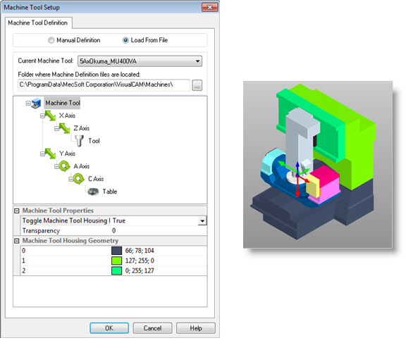
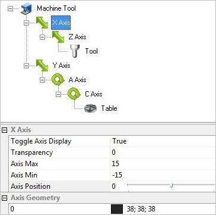
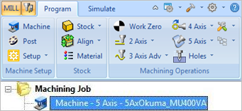

Selecting this option allows you to select a machine tool from a library of machine tools. This displays the machine tool and automatically loads the machine properties. See List of Machine Tools below.
 Dialog Box: Machine Tool Setup - Load from File |
You can edit the parameters by selecting an axis to change the properties.
 Dialog Box: Machine Tool Setup - Load from File |
Click OK and the Machine Tool Definition is now displayed under Machining Operations Browser. The defined machine tool can then be used to perform machine tool cut material simulation.
 Machine Tool Definition is now displayed under Machining Operations Browser |
The following machine tools are currently defined in C:\ProgramData\MecSoft Corporation\VisualCAM 2024\Machines
3AxBrownSharpeSystem1000VC
3AxHaasVF-3
3AxHurcoVMX24
3AxHurcoVMX30
3AxMahoMH600E2
3AxMakinoV99L
3AxMatsuuraMC1000VF
3AxMatsuuraMT560
3AxMatsuuraMT760
3AxMoriSeikiNV5000
3AxSigma
3AxSodickMC430L
4AxDentalPRO400
4AxHermleC20U
4axHurcoVMX30
4AxMazakMazatechPFH5800
5AxAlzmetallGS650_5-T
5AxAxaVPC55U
5AxBermaqSG
5AxBridgeport5ax400
5AxDatronDentalC
5AxDEPODYNAMIC1009
5AxDEPOHC2012
5AxDEPO-VF3016
5AxDMU40
5AxDMU50
5AxDMU60_T2
5AxDMU60T
5AxDMU100T
5AxEdel4020
5AxEimaSigmaD
5AxGeissFZ1000x800x760ECO
5AxGeissFZ2500x1250
5AxGFAgieCharmillesUCP800Duro
5AxHaasUMC750
5AxHaasVF2
5AxHaasVF6
5AxHedeliusRS80
5AxHermleC20U
5AxHermleC30U
5AxHermleC40
5AxHermleC40U
5AxHermleC600U
5AxHermleC800
5AxHuberGrimmeHG3000
5AxHurcoBMC30
5AxHurcoVMX24
5AxHurcoVTXU
5AxKraft_penta-GK3015
5AxMakaMD6
5AxMakaMM7s
5AxMakaMM7t
5AxMAP_LPZ900
5AxMatec30HV
5AxMatsuuraMAM72-3VS
5AxMatsuuraMAM600
5AxMazakIntegrex-e650
5AxMazakIntegrex-e650_steady_rest_arms
5AxMazakVariaxis630
5AxMikron
5AxMikronHSM400U
5AxMikronHSM600U
5AxMoriSeikiGV503
5AxMoriSeikiNMV5000DCG
5AxMoriSeikiSV500
5AxOKK_VC-X350
5AxOKK_VP600-5AX
5AxOkuma_MU400VA
5AxPocketNC
5AxPromaIsel
5AxSpinnerU5-620
5AxTOR2005
5AxWilleminW408MT
5AxWinner
Bermaq
CNC Mill
CNC Router
CRO_5AX
MAXXIS 5Axis
Minitech2
Roland_DWX_50
Roland_MDX_40
Roland_MDX_40_ZCL_40
Thermwood 5 Axis
Tormach-Rotary+X
|